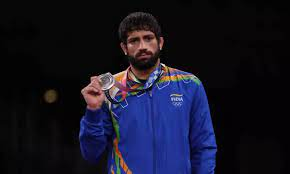

This year was one of the best for the Indian Olympic players, with India clinching a total of 7 Olympic medals, along with a gold medal in athletics after 121 years! Apart from the gold, we got 4 bronze and 2 silver medals. Seven medals in one olympic is the best for India so far. In golf, Aditi Ashok missed the medal by a small margin, finishing 4th. Neeraj Chopra (Javelin) clinched gold, Mirabai Chanu (Weightlifting) and Ravi Dahiya (Wrestling) clinched Silver, while Bajrang Punia (Wrestling), P.V. Sindhu (Badminton), Lovlina Borgohain (Boxing) and The men's hockey team won bronze.
Name: P.V. Sindhu Game: Medal: Bronze(🥉) About: Pusarla Venkata Sindhu (5 July 1995) is an Indian professional badminton player. Over the course of her career, Sindhu has won medals at multiple tournaments including Olympics and on the BWF World Championship including a gold at the 2019 World Championships. She is the first Indian to become the Badminton World Champion and only the second individual athlete from India to win two consecutive medals at the Olympic Games. She is currently ranked world no. 2. Awards: Padma Bhushan Award, the third-highest civilian award in India, in January 2020 Padma Shri Award, the fourth highest civilian award in India, in March 2015 Dhyan Chand Khel Ratna Award, the highest sporting honour of India, on 29 August 2016 Arjuna Award for badminton on 24 September 2013
Name: Bajrang Punia Sport: Medal: Bronze(🥉) About: Bajrang Punia (born 26 February 1994) is a freestyle wrestler and olympian from India. He competes in the 65-kg weight category. He is the only Indian wrestler to win 3 medals at the World Wrestling Championships. He won a bronze medal by defeating Kazakhstan’s Daulet Niyazbekov at Tokyo Olympics, where the former Asian Games gold medalist dominated the men's 65 kg bronze medal from start to finish. The bronze medal match ended in a 8-0 scoreline in favour of Punia. Awards: Arjuna Award, 2015 Padma Shri Award, 2019 Major Dhyan Chand Khel Ratna award, 2019 FICCI India Sports Award 2020
Name: Men's Hockey Team Sport: Medal: Bronze(🥉) About: The India men's national hockey team represents India in international Field hockey competitions. In 1928, the team won its first Olympic gold medal and until 1960, the Indian men's team remained unbeaten in the Olympics, winning six gold medals in a row. The team had a 30–0 winning streak during this time, from their first game until losing in the 1960 gold medal final. India also won the World Cup in 1975. It is the most successful team ever in the Olympics, having won eight gold medals in 1928, 1932, 1936, 1948, 1952, 1956, 1964 and 1980. The team won a bronze medal in 2021, winning a medal in Olympics after a gap of 41 years. India also has the best overall performance in Olympic history with 83 victories out of the 134 matches played. They have also scored the most goals in the Olympics than any other team. Awards: Awards are not given to teams
Name: Lovlina Borgohain Sport: Medal: Bronze(🥉) About: Lovlina Borgohain (born 2 October 1997) is an Indian boxer and an Olympic medal winner. She won a bronze medal at the 2020 Summer Olympics (Tokyo) in the Women's welterweight event, becoming only the third Indian boxer to win a medal at the Olympics. She also won bronze medal at the 2018 AIBA Women's World Boxing Championships and the 2019 AIBA Women's World Boxing Championships. She won the gold medal at 1st India Open International Boxing Tournament held in New Delhi and silver medal at 2nd India Open International Boxing Tournament held in Guwahati. Borgohain is the first female athlete and the second boxer from Assam to represent the state in the Olympics. In 2020, she became the sixth person from Assam to receive Arjuna Award. Awards: Arjuna Award, 2020
Name: Saikhom Mirabai Chanu Sport: Medal: Silver(🥈) About: Saikhom Mirabai Chanu (born 8 August 1994) is an Indian weightlifter. She won the silver medal at the 2020 Tokyo Olympics in Women's 49 kg category. Mirabai Chanu has won the World Championships and multiple medals at the Commonwealth Games. She was awarded the Padma Shri by the Government of India for her contributions to the sport. Chanu won the silver medal in the women's 48 kg weight class at the 2014 Commonwealth Games, Glasgow; she went on to break the games record en route to the gold medal at the 2018 edition of the event held in Gold Coast. Prior to the 2020 Summer Olympics, her biggest achievement came in 2017, when she won the gold medal at World Weightlifting Championships held in Anaheim, California. Awards: Major Dhyan Chand Khel Ratna, 2018 Padma Shri, 2018

Name: Ravi Kumar Dahiya Sport: Medal: Silver(🥈) About: Ravi Kumar Dahiya, also known as Ravi Kumar, is an Indian freestyle wrestler who won a silver medal at the 2020 Tokyo Olympics in the 57 kg category. He is also a bronze medalist from 2019 World Wrestling Championships and a two-time Asian champion. In his World Championships debut in 2019, Dahiya defeated the European champion Arsen Harutyunyan in the round of 16, and the 2017 world champion Yuki Takahashi in the quarterfinal, to earn one of the six available quota places for the 2020 Summer Olympics. Awards: None till now
Name: Neeraj Chopra Sport: Medal: Gold(🥇)(Yes, seriously) About: Neeraj Chopra (born 24 December 1997) is an Indian javelin thrower, and a Junior Commissioned Officer (JCO) in the Indian Army. He is the first track and field athlete to win a gold medal for India at the Olympics. In the 2016 IAAF World U20 Championships, Chopra achieved a world under-20 record of 86.48 m. He participated in the 2018 Commonwealth Games and the 2018 Asian Games, and won gold medals in both the events. In his debut at 2020 Summer Olympics, Chopra won the gold medal on 7 August 2021 with a throw of 87.58m in his second attempt. As of 2021, he is one of only two Indians to have won an individual Olympic gold medal (the other being Abhinav Bindra), as well as the youngest-ever Indian gold medalist in an individual event and the only one to have won gold in his Olympic debut. Awards: Arjuna Award, 2018 Vishisht Seva Medal, 2020
What's a better award than an olympic gold?
Neeraj Chopra brought smiles to the face of a billion people when he won the gold medal and India's national anthem was played at the olympics!
"Winners never quit and quitters never win" -Vince Lombardi


.jpg)